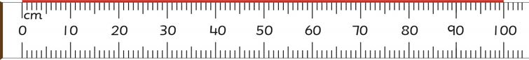

- 4. Exercise book
- 5. Ruler
- 6. Mathematics book
- 7. Eraser
- 8. Mathematical set kit
Measuring length in metres
The length of different objects can also be measured in metres. One metre is equal to one hundred centimetres, that is 1 m = 100 cm. The given picture shows a ruler which is 100 centimetres or 1 metre long.

Activity 4:Measuring length of different objects
1.
Measure the length of each object in metres from the following list.
| Objects | Length | |
|---|---|---|
| (a) | Teacher’s table | |
| (b) | Classroom door | |
| (c) | Desk |
2.Record the length of each object.
3.
Which object has the largest length?Write its value.